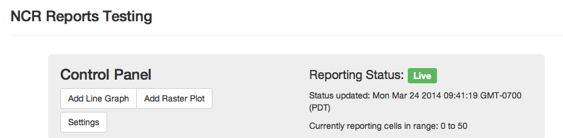
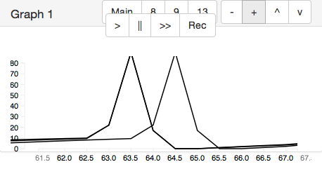
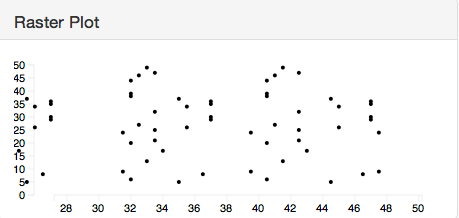
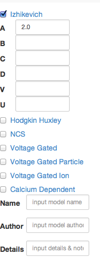
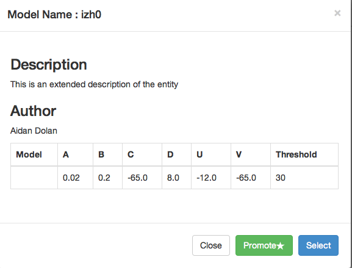

The current progress for each tab is highlighted below. In addition, the team has implemented a user login system and structured the database.
The Senior Projects class will finish in May of 2014.
The class workshop is scheduled for May 2nd, 2014.
On the reports tab, the control panel is the main interface for the user. The control panel allows the user to add graphs and raster plots, as well as change the settings. The current configuration settings are presented in this panel.
When a user adds a graph the settings for each axis are standard. However, the buttons allow for customization of the span of each axis. Graph capture is available so that the results may be saved in a format for later viewing.
The raster plots provide a visual display of the simulation activity. The report displays are designed to be customizable. The customizations include color changing, drag and drop positioning, and axis manipulation.
This tab shows the many models in the database. Users have filter options to refine their searches based on model types and parameter values. The search layout is made up largely of collapsible components in order to make the interface simple to use.
The tab shows a preview of each model. If the user chooses a model from the list, a detail window opens to display all of the model's parameters. From here the user has the option of promoting the model to a larger scope.
